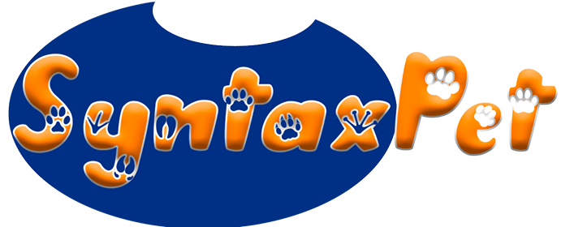

Brinquedo Syntaxpet Varinha para Gatos

- - Indicado para gatos;
- - Super divertido;
- - Com catnip;
- - Alivia o estresse do pet;
- - Estimula o exercício físico;
- - Ajuda a entreter seu pet por horas,
- - Disponível em embalagem com 1 unidade.
Especificações
O Brinquedo LCM Varinha Cat Fishing Azul para Gato contribui para aguçar os instintos do seu felino. É um brinquedo ideal para você (papai ou mamãe) se divertir junto com seu gatinho. Quanto mais você movimenta a varinha, mais você desperta o interesse do pet de brincar e se manter ativo
Opiniões
-
-
- Minha gatinha gostou muito, mas durou apenas 2 mês, ela saía arrastando a varinha para tudo que era canto, só restaram 2 penas.
- Daniela
-
-
-
- Otimo produto meu gatinho adorou.....
- Juliete
-